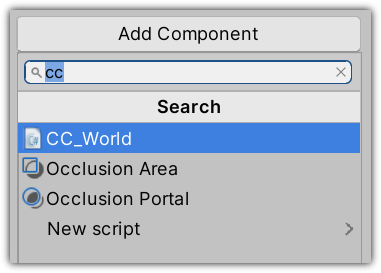
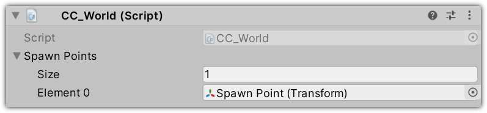
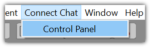
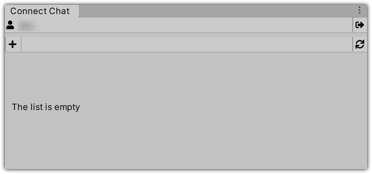

ワールド作成
新しいワールドの作成は非常に簡単です：
- ワールドに使用したいコンテンツが入ったシーンを作成し、セットアップします。
- DMM VR Connect アカウントにログインします。
- ワールド一覧に新しいワールドを追加してください。
- シーンをアップロードします。
- ワールドをパブリッシュします。
ステップ1：シーンの作成とセットアップ
新しいシーンを作成し、ワールドに使いたいコンテンツを配置してください。
次に、空の_GameObject_を置き、 _CC World_コンポーネントを追加します。

空の_GameObject_を置き、シーンにスポーンポイントを追加します。
そして「CC World」のスポーンポイント一覧に追加してください。

⚠️ シーンに対応していないUnityのコンポーネント・シェーダーがあるのでご注意ください。 対応コンポーネント一覧は こちら 、対応シェーダー一覧は こちら からご確認いただけます。
ステップ2：DMM VR Connectへのログイン
「Connect Chat」メニューよりコントロールパネルを開きます。

初めてコントロールパネルを開くと、利用規約が表示されます。 コントロールパネルを使用するには、利用規約に同意する必要があります。
コントロールパネルのウィンドウが開いたら、「Login」ボタンを押してご利用の DMM VR Connect アカウントにログインしてください。
ログイン後、開いたブラウザウィンドウの「Confirm」ボタンを押してUnityに戻ってください。
ログイン完了後、コントロールパネルにアップロードしたワールドの一覧が現れます。

コントロールパネルはワールド一覧に加え、ユーザーにとって有益な情報や操作がいくつかあります。
ステップ3：新規ワールドの追加
「+」ボタンを押す事によって新しいワールドを追加してください。するとワールド一覧が更新され、新規ワールドが一覧から見れるようになります。
ID: ワールドの内部ID
Title: ワールド選択画面に現れるワールドの名称です。最大16文字です。
Description: ワールドの説明文
Tags: あなたのワールドを説明するタグを8つまでつけることができます。各タグは最大16文字です。
Public: ワールドが誰にでも利用できるか、あなた自身にしか使えないかの表記（プライベートに設定していても同じインスタンスに他のユーザーを招待することは可能です）
右記の画像はワールドのサムネイルです。サムネイルは256 x 256のテクスチャで、ワールド選択画面にてワールドの名称と一緒に表示されます。
画面の右端には三つのアイコンがあります:
Edit: ワールドの詳細を修正できるモードをオン・オフできます。
Build & Upload: 現在選択されているシーンでワールドのアセットバンドルをビルドし、アップロードします。アップロードに成功したらワールドがConnectChatで利用できます。
Delete: ワールドを削除します (一度削除したワールドは復元できません)。
ワールド詳細の修正
「Edit」をクリックして詳細を修正したいワールドの「edit mode」をオンにしてください。
このモードからワールドの名称と説明文の修正、サムネイルの変更、ビジビリティのオン・オフが行えます。
カスタムサムネイルは256 x 256ピクセルで下記の設定でインポートしてください。
ステップ4：アップロード
ワールドのビルドとアップロードを行うには、ビルドボタンをクリックしてください。アップロードが完了次第、ダイアログが出現します。 アップロードに成功したらワールドがConnectChatで利用できます。 アップロードがうまくいかない場合（シーンに非対応コンポーネントを利用していた、等）は、コンソールのエラーメッセージを確認してください。